Interactive Designer
Mónica Arcila
I design interactive experiences, design systems and AI-driven workflows — moving between UX research, game design and immersive media, from Medellín to Wellington.
Personal Projects
Work from my Interactive Design degree at EAFIT (Medellín) and my exchange semester at Te Herenga Waka — Victoria University of Wellington. At EAFIT I always worked with teammates, so each project says what my part was. Pick a category to filter the list; the tags on each project are the skills I used and the ones I picked up from the project itself and from my teammates. Research I did at EAFIT beyond the course syllabus is in its own section below.
-
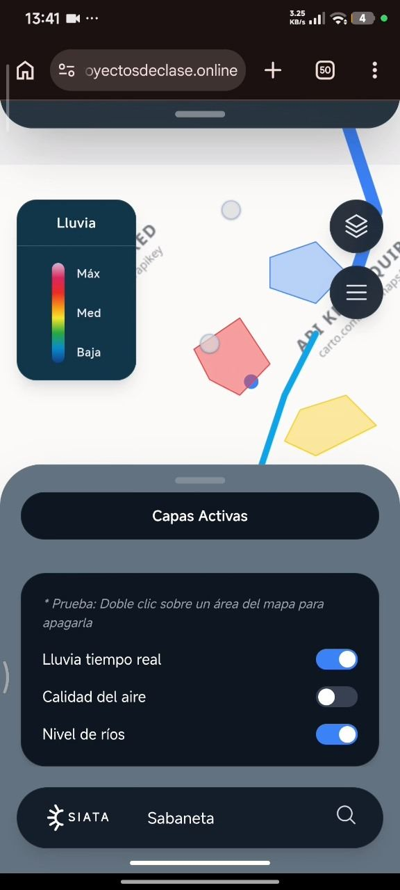
FeaturedSIATA Geoportal Ciudadanos
UX, Research & Product Design · AI-Driven Interactive Design
A team of five redesigned Medellín's public weather-and-risk portal for everyday citizens. I ran interviews and tests and built the working prototype, which was then evaluated through 36 Hotjar sessions and Maze missions.
-
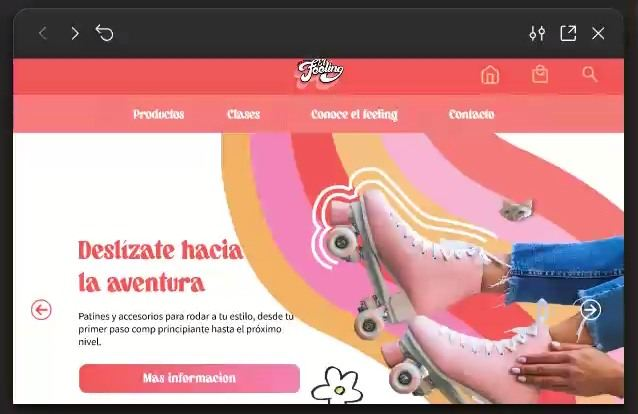
El Feeling
UX, Research & Product Design · 3D, Motion & Visual Design
-
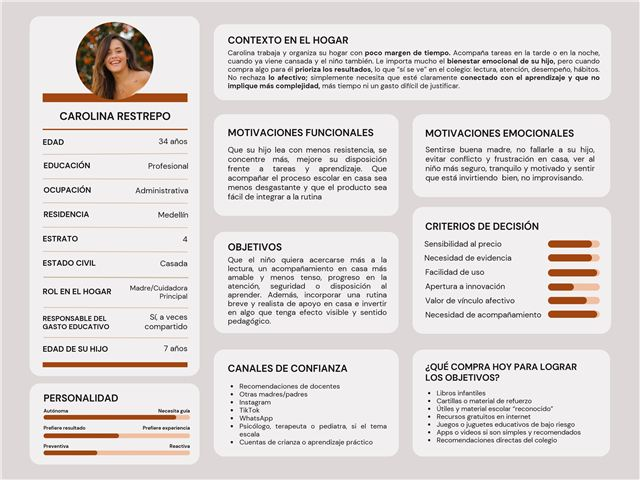
Hugger Island
UX, Research & Product Design
-
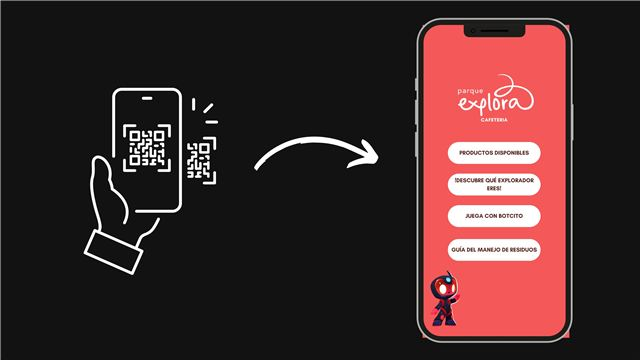
Botcito for Parque Explora
UX, Research & Product Design · Game Design & Narrative Worlds
-
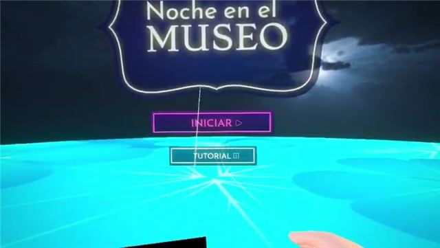
FeaturedA Night at the Museum
Immersive & VR Experiences · Game Design & Narrative Worlds
Lead Unity developer in a team of six: I led the work of turning the team's one-page design into a working VR build, set up our GitHub workflow and planned the development schedule.
-
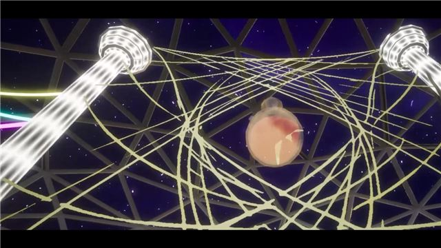
FeaturedNuri's Greenhouse
Immersive & VR Experiences · Game Design & Narrative Worlds
A solo room-scale VR world. It was my first build in Unreal Engine: after about three semesters working in Unity, I moved to a new engine for a semester.
-
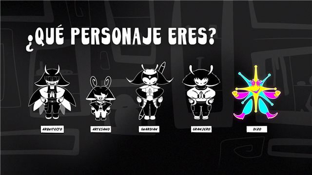
Featured Most Creative Project · Inventiva 2024Meldiria
Game Design & Narrative Worlds
In a team of six, I led the game's development and built the world's Mythos, Ethos and Topos. One universe became a 2D game, an animation, a personality quiz and a world bible.
-
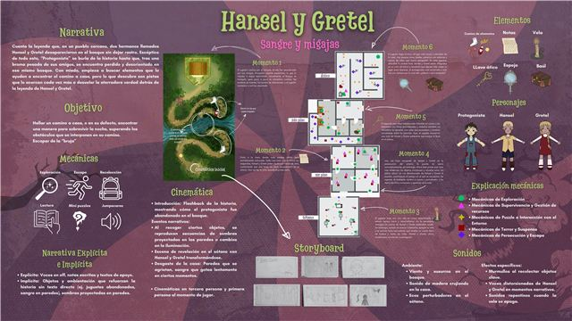
Hansel & Gretel: Blood and Crumbs
Game Design & Narrative Worlds
-
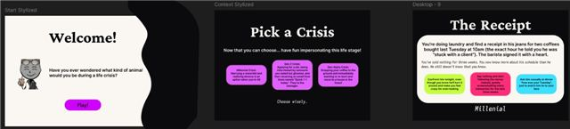
FeaturedWhat Kind of Animal Would You Be During a Life Crisis?
AI-Driven Interactive Design · UX, Research & Product Design
A solo two-path quiz with five choices and three earned endings per path. I used Claude and Gemini to test the branching logic, not to design it for me.
-
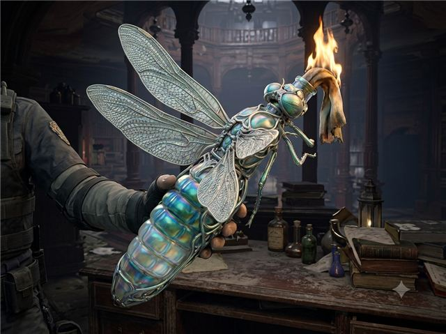
Surviving Amongst Nature
AI-Driven Interactive Design · 3D, Motion & Visual Design
-
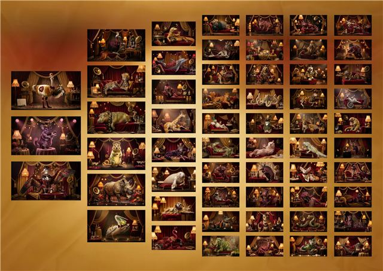
Nature's Embodiment of Wine
AI-Driven Interactive Design · 3D, Motion & Visual Design
-
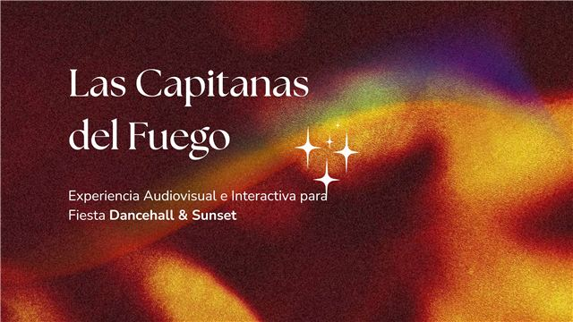
Capitanas del Fuego
3D, Motion & Visual Design
-
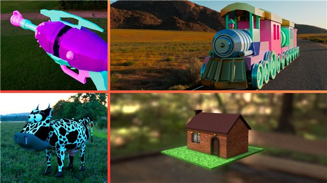
3D Modelling & Animation Reel
3D, Motion & Visual Design
Research Seedbeds
Research projects I took part in at EAFIT alongside my degree (semilleros de investigación). They were not part of any course.
Experience
Communications Assistant (Monitora Administrativa)
I joined as a graphic designer and ended up as the communications lead's right hand, in a team that always had to adapt fast.
- Main designer for the School's Instagram posts, stories and event pieces, both static and animated.
- Wrote technical, visual and narrative scripts for videos and events, and live-covered events on X in Spanish and English.
- Managed the content calendar, assigned and reviewed the team's work, and wrote copy.
- Started the Boletín Especial, a newsletter with the most interesting news from the School each month (it moved from every three months to roughly monthly). I was the only person on it: I researched the stories, rewrote them in EAFIT's and the School's tone of voice, designed the newsletter and emailed it to a specific list of people from the School's main email account.
- Helped put into practice a monthly content strategy, whose main idea came from the communications lead, to make women in finance, economics and political science visible: talks, events and the #YoHagoParte campaign. With one teammate I designed its Instagram content, and at one point I led that work.
- Co-designed a character-based strategy to give the School a more personal voice online.
Skills
What I can do as an interactive designer, grouped by area. They come from what I did in my projects and jobs, and from what I learned alongside my teammates.
UX & User Research
- User interviews
- Surveys & questionnaires
- Personas & proto-personas
- Lean UX & design thinking
- Cognitive walkthroughs & tree testing
- Usability testing (Hotjar, Maze)
- Information architecture
- Market research & observation
- Synthesising results, with AI support
Interaction & Product Design
- UI/UX design in Figma
- Interactive prototypes (Figma, Figma Make, HTML)
- Interaction flows & feedback
- UI kits & components
- Responsive design
- Mobile app design
- Gamification
- UX writing
Game & Interactive Development
- Unity (2D and 3D)
- Unreal Engine
- Scripting & game mechanics
- NavMesh, NPCs & particles
- Debugging
- Version control with GitHub
- Leading a build through to delivery
- Development planning & schedules
VR & Immersive
- VR interaction design (Meta Quest 3)
- Haptic feedback
- Onboarding & tutorial design
- In-experience emotion check-ins
- Environmental storytelling
- Spatial audio
- VR level & layout design
Narrative & Worldbuilding
- Worldbuilding (Mythos, Ethos, Topos)
- Branching narrative & endings
- Transmedia storytelling
- World bibles & technical writing
- Game and experience one-pagers
- Scriptwriting for video and events
Generative & AI-Driven Design
- Prompt engineering & recipe design
- Generative image systems
- AI-assisted scripting & debugging
- AI-assisted logic testing
- Documenting process and AI use openly
- Claude, ChatGPT, Gemini, Midjourney
3D, Motion & Visual
- Maya (modelling, basic rigging, animation)
- Lighting & rendering
- Sound design & music for animation
- Substance 3D Painter
- TouchDesigner & audio-reactive visuals
- Kinect & camera interaction
- After Effects & Animate
- Illustrator, Photoshop, Affinity, Canva
- Vector UI assets
- Social media graphics, static & animated
Communication & Collaboration
- Pitching to real clients
- Presenting to teachers and clients
- Content calendars & copywriting
- Newsletter production: research, institutional tone of voice, design and email distribution
- Live event coverage in Spanish and English
- Reviewing and coordinating team work
- Working in teams of three to ten
- Project planning
- Bilingual: Spanish & English
About me
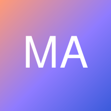
I'm an Interactive Designer currently based in Wellington, New Zealand, specialising in UI implementation, design systems and AI-driven design workflows. My path has taken me through six semesters at EAFIT (Medellín, Colombia) and, this year, an exchange in Interactive Media Design at Te Herenga Waka — Victoria University of Wellington.
Design, to me, is a partnership — I like to show the thinking behind the pixels: the research, the wireframes, the awkward first drafts, not just the polished final screen. My work spans UX research, interactive prototypes, game design, virtual reality and generative/AI-assisted design, and I'm currently looking for an interactive design internship in Wellington or Auckland.
Tools & software
Let's work together
Have an internship in mind? Let's talk
Based in
Wellington, New Zealand
Availability
Open to interactive design internships in Wellington and Auckland